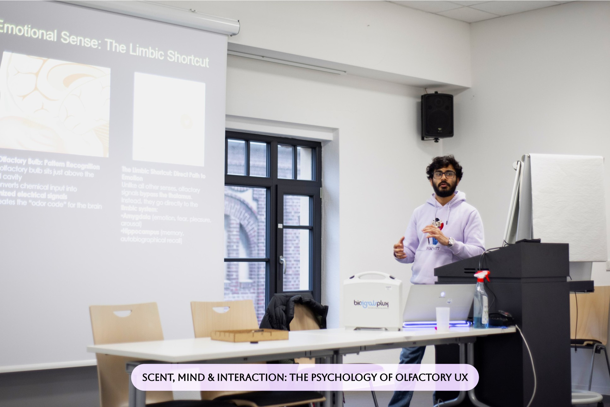
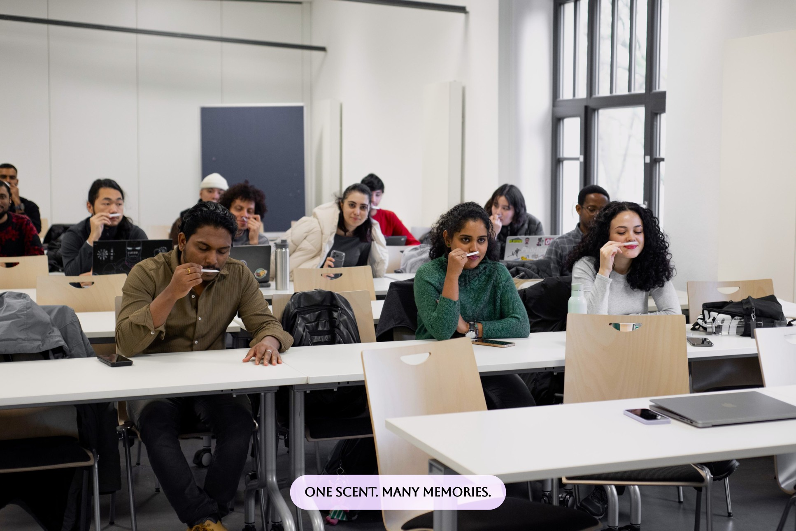

Guest lecture / Hochschule Rhein-Waal
Scent, mind
& interaction.
Psychology for UX Practitioners
In a special lecture for the Psychology for UX Practitioners course, I introduced olfaction as an interaction modality, connecting the physiology of smell with multisensory user experience.
Students shared the memories evoked by a scent, observed a live visualization of biometric signals and developed scent-integrated UX concepts for fields including smart homes, sport, meditation and online perfumery.
The session brought theory, sensory exploration and design practice into the same room.
More on LinkedIn
